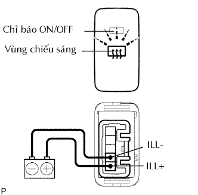
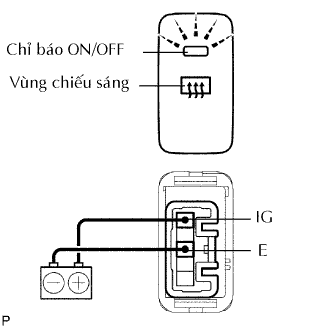
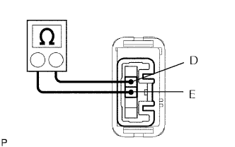

CÔNG TẮC BỘ SẤY KÍNH > KIỂM TRA TRÊN XE |
| 1. KIỂM TRA CỤM CÔNG TẮC SẤY KÍNH HẬU |
|  |
Kiểm tra vùng chiếu sáng của công tắc.
| Điều kiện đo | Điều kiện tiêu chuẩn |
| Cực dương ắc quy (+) → Cực 1 (ILL+) Cực âm ắc quy (-) → Cực 2 (ILL-) | Sáng lên |
|  |
Kiểm tra chỉ báo ON/OFF của công tắc.
Hãy ấn vào công tắc vài lần. Kiểm tra rằng chỉ báo ON/OFF sáng lên hoặc tắt đi theo sự vận hành công tắc.
| Điều kiện đo | Tình trạng công tắc | Điều kiện tiêu chuẩn |
| Cực âm ắc quy (+) → Cực 5 (IG) Cực âm ắc quy (-) → Cực 3 (E) | Công tắc sưởi kính ON | Sáng lên |
|  |
Đo điện trở của công tắc.
| Điều kiện đo | Tình trạng công tắc | Điều kiện tiêu chuẩn |
| 4 (D) - 3 (E) | ON | Dưới 1 Ω |
| 4 (D) - 3 (E) | OFF | 10 kΩ trở lên |